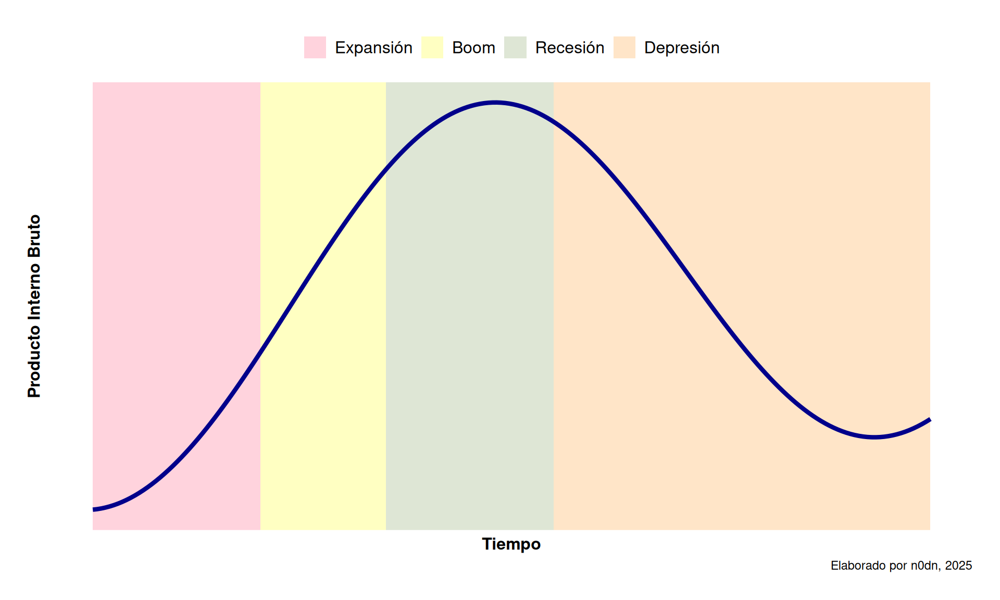

Los ciclos del capital y su vinculación con la tendencia decreciente de la tasa de ganancia
economía política
marxismo
tasa de ganancia
capital
ciclos
Abordamos el problema de los ciclos del capital desde la teoría marxista y cómo se vincula con la tendencia decreciente de la tasa de ganancia del capital industrial
Clément Juglar fue el primer economista europeo en describir las crisis como “momentos de ciclos económicos sucesivos”. Desde entonces, se les ha definido como ciclos clásicos1. Según Karl Marx, la recurrencia de los ciclos se debe, por un lado, al desequilibrio estructural entre el sector I y el sector II. Dadas las condiciones de competencia, la destrucción de capitales no competitivos y el dominio de monopolios internacionales, se produce una tendencia a la baja de la tasa de ganancia que, según Marx2.
[…] ralentiza la formación de nuevos capitales autónomos, amenaza el desarrollo del proceso capitalista de producción, fomenta la sobreproducción, la especulación, las crisis y el capital superfluo, además de la población superflua.
Marx calculó la longitud del ciclo industrial mediante la reconstrucción del capital fijo, es decir, el tiempo necesario para renovar la maquinaria de una industria, que oscila entre 7 y 10 años3. Por lo tanto, la renovación del capital fijo explica tanto la longitud del ciclo comercial como el auge y aceleración de la acumulación de capital, conocidos como periodos Sturm und Drang (tormenta y estrés)4. Sin embargo, no todas las mercancías logran ser vendidas, lo que conduce a la acumulación de stocks o mermas, cuya acumulación repercute a largo plazo en la composición orgánica del capital, fomentando la subinversión o subconsumo5.
La subinversión periódica de capital tiene una doble función: reducir la tendencia a la baja en la tasa de ganancia y frenar su propia declinación. Esto significa resolver dos problemas productivos: invertir menos en maquinaria que se vuelve obsoleta e invertir en nuevas tecnologías para reducir el costo de producción, y reducir la desvalorización del capital como consecuencia de los stocks. Estos son los llamados ciclos clásicos de producción capitalista, que constan de cuatro fases: la primera fase es de expansión en la inversión y la producción, lo que conduce a una segunda fase de auge o boom, que termina en un punto crítico que desencadena una caída en la inversión, producción y ganancia que se conoce como recesión, y que concluye en un periodo de poco crecimiento productivo conocido como depresión.
A partir del trabajo de Marx sobre la existencia de ciclos de crisis en el capitalismo industrial, surgieron otras investigaciones que profundizaron sobre este fenómeno6. Trotsky realizó un estudio sobre el desarrollo del capitalismo posterior a la Primera Guerra Mundial a partir de unas tablas estadísticas basadas en series de tiempo publicadas por la revista Times en 1920. Tomó como base 138 años de datos económicos de los países centrales y encontró que en ese periodo se registraron 16 ciclos de auge y crisis7. También encontró diferencias en el tiempo de las crisis en periodos generales de auge; de esta manera planteó que en
los periodos de desarrollo capitalista, las crisis son breves y superficiales en su carácter, mientras que los auges son más duraderos y de mayores consecuencias”, pero “en los periodos de decadencia capitalista, las crisis tienen un carácter más prolongado mientras que los auges son superficiales, débiles y especulativos.
Nicolai Kondratiev estimó, por su parte, que las crisis de las economías capitalistas constan de ondas largas de auge, bonanza y crisis, partiendo de los supuestos de Juglar, que se repiten como consecuencia de la inestabilidad de las formas de producción y de la especulación monetaria8. Cada onda que describe una gráfica sinusoidal, comprende una duración de entre 47 a 60 años, a diferencia del ciclo de crisis neoclásica que sugiere periodos de entre 7 a 10 años9. Los ciclos u ondas de Kondratiev10, se componen de cuatro fases, como son la prosperidad (p), recesión (r), depresión (d) y mejora (e)como se muestra en el Gráfico.
Modelo del ciclo económico clásico
Mandel pretende solucionar el problema de las ondas largas relacionando varios factores que pueden influir en la tasa de ganancia de manera probabilística, en lugar de verlo de manera mecánica, como una caída brusca del costo de las materias primas, la expansión repentina en el mercado financiero internacional, guerras y revoluciones que se subordinan a la lógica del proceso de acumulación del capital11. Para ello, propone que se analicen los mecanismos relacionados con la dinámica de la tasa de ganancia en
relación a las condiciones históricas concretas del desarrollo del modo de producción capitalista en los periodos en que han tenido lugar esos grandes giros históricos del sistema
, y no como si el capitalismo fuese inalterable desde el siglo XIX12. Por lo tanto, las crisis de las relaciones de producción “deben verse como una crisis social general”, es decir, “la decadencia histórica de todo un sistema social y un modo de producción” que se presentan como crisis de apropiación, valorización y acumulación capitalista13.
En este punto, Keynes afirma que el aumento en el ritmo de inversión sin un aumento equivalente en el ahorro beneficia las ganancias de los grandes empresarios. Sin embargo, cuando los beneficios son elevados, el aparato financiero facilita los encargos y compras de bienes de capital crecientes, y al hacerlo, estimula aún más la inversión que conduce al aumento de beneficios. Esto origina el auge de las inversiones a nivel nacional. La crisis, por tanto, es el efecto contrario al auge, ya que si éste proviene de un excedente de inversión sobre ahorro, la crisis representa un excedente de ahorro sobre inversión.
En este punto, Keynes afirma que el aumento en el ritmo de inversión sin un aumento equivalente en el ahorro beneficia las ganancias de los grandes empresarios. Sin embargo, cuando los beneficios son elevados, el aparato financiero facilita los encargos y compras de bienes de capital crecientes, y al hacerlo, estimula aún más la inversión que conduce al aumento de beneficios. Esto origina el auge de las inversiones a nivel nacional. La crisis, por tanto, es el efecto contrario al auge, ya que si éste proviene de un excedente de inversión sobre ahorro, la crisis representa un excedente de ahorro sobre inversión.
El desplome de la inversión no puede ser retomado por el sector privado, ya que no encuentra incentivos para invertir en una economía en crisis. Por lo tanto, Keynes sugiere la intervención del Estado para reactivar la economía nacional. Una vez recuperado el nivel de inversión similar al registrado antes de la fase crítica, determina la necesidad de dejar nuevamente las riendas de la economía al sector privado. Esto crea paulatinamente un proceso de acumulación en favor de pequeños grupos empresariales organizados con ayuda, muchas veces, de los Estados. Estos monopolizan la producción, distribución y venta en algunos mercados, creando así oligopolios que concentran una gran parte de las ganancias de una economía nacional o internacional.
Por el contrario, Fisher sostiene que la génesis de una crisis surge como consecuencia de una burbuja de crédito que desencadena una serie de acontecimientos negativos en la economía real y que derivan en una deflación de los precios de las mercancías14.
El autor explica que existen nueve causas interrelacionadas y dependientes entre sí que pueden desencadenar una crisis tales como :
Recorte de gastos y ventas de liquidación para pagar las deudas e intereses.
Contracción de la oferta de dinero en función de préstamos bancarios.
Caída en el nivel de precios de los activos.
Caída del patrimonio neto de las empresas y, por lo tanto, aumento en el número de bancarrotas empresariales.
Caída de beneficios a los inversionistas.
Reducción de la producción, comercio y empleo.
Pesimismo y pérdida de confianza generalizada.
Acumulación de ahorros.
Caída de las tasas de interés nominales y aumento en las tasas de interés reales ajustadas por la deflación.
Minsky sostiene que las economías capitalistas son inestables y que el reto es estabilizar un sistema con estas características a través de la intervención del gobierno. El rol elemental del Estado es fundamental para evitar las crisis financieras, ya que el “Big Government” provee de un régimen en el que la libre competencia de mercados sea un instrumento para restringir las presiones inflacionarias sobre los precios, manteniendo estándares aceptables de ganancia para los empresarios. Además, ofrece un piso económico que asegure niveles mínimos de vida para los trabajadores, lo que afecta la demanda efectiva de mercancías, servicios y bienes.
Kindleberger y Gilbraith han demostrado la existencia de patrones de comportamiento compulsivo de los agentes financieros como causas de las crisis bursátiles15. Estos patrones se caracterizan por estados de euforia y pánico generalizado al interior de las redes de banqueros, inversionistas, accionistas y especuladores. Ambos estudios concuerdan en que el patrón de surgimiento de una crisis financiera surge por una innovación tecnológica, financiera o de producción que desencadena una euforia de los inversionistas por las altas tasas de ganancia y el corto tiempo de retorno de la inversión16. Durante este periodo de optimismo se generan burbujas financieras, es decir, aumentos de los precios de los activos en la fase de manía del ciclo de crisis, que no se pueden explicar con base en la teoría económica. Al llegar a un momento crítico o crack, las burbujas se revientan17, generan pánico a nivel general y devienen en retiro de inversiones, ventas de acciones masivas, fugas de capitales a otros mercados menos inestables, cierres de empresas, despidos, etcétera.
Por su parte, Michal Kalecki parte de un análisis macroeconómico para calcular el peso que tienen los monopolios en los precios, la producción y el crédito en una economía nacional18. En este sentido, Kalecki supone que debe existir un acuerdo tácito entre los empresarios que integran un monopolio con los agentes del gobierno, ya que
El acuerdo tácito puede evolucionar a su vez hacia un acuerdo más o menos formal de tipo cartel, equivalente a un monopolio en gran escala, limitado tan sólo por el temor de que quieran ingresar a la industria nuevas empresas.
Pero más interesante es su hipótesis acerca del grado de monopolio durante las fases del ciclo económico, en el cual
el grado de monopolio tiende a elevarse durante una depresión de la actividad económica general y a volver a disminuir durante el periodo de auge.
En resumen, los ciclos de crisis capitalistas corresponden a fases de expansión y contracción de la realización de plusvalía y la acumulación de capital que no coinciden en su ritmo, volumen y proporciones. Esta discrepancia es la clave de las crisis capitalistas de sobreproducción, inherentes a las leyes internas del modo de producción capitalista. Por lo tanto, las crisis son inevitables e inmanentes a este sistema, pero muestran patrones de comportamiento recurrentes por parte de sus agentes económicos preponderantes, es decir, la burguesía y la alta burocracia del Estado.
Sin embargo, las evidencias históricas muestran que las causas de las crisis están ligadas al tipo de Estado capitalista. En consecuencia, la recurrencia de las mismas difiere en tanto si el origen es por una sobreproducción de mercancías, como en el caso de los países centrales, o por sobreendeudamiento, como en los países semi-periféricos y periféricos. En este sentido, para comprender el caso mexicano y quizás cualquier latinoamericano, es necesario comprender las relaciones teóricas que implica un Estado capitalista dependiente. Esto permitirá analizar las causas estructurales de las crisis, la evolución de los bloques de dominación de acuerdo con el modo de acumulación, y las transformaciones del Estado en cuanto a su capacidad económica.
Footnotes
- De acuerdo con Bernard Rosier, a partir de los trabajos de Juglar cuya metodología para el estudio de las crisis consistió en el análisis de las series estadísticas cronológicas, fundó las bases del estudio de los ciclos económicos en el capitalismo y de las crisis. El economista norteamericano Joseph A. Schumpeter consagró este tipo de análisis los denominó como “los ciclos Juglar”, que incorporó a sus estudios sobre las crisis. Como menciona Rosier sobre el ciclo Juglar o clásico, se debe a “L’expansion dans la période longue est dès lors reconnue comme rythmée par des cycles relativement réguliers d’une amplitude moyenne de huit annés (leur amplitude de six à onze ans) et l’apparition des crises tend ainsi à être considérée comme une composante”normale” du mouvement économique des économies capitalistes”. En este sentido, el ciclo de juglar coincide en el periodo de años con el propuesto por Marx, entre 8 y 11 años, aunque este último sostiene que se debe al ciclo de cambio del capital fijo, es decir, el periodo en que las maquinarias industriales deben renovarse por desgaste u obsolescencia. Rosier, B., Les théories des crises économiques, Ed. La decouverte, Paris, 1987, p. 2.
Marx, K, El Capital, Siglo I, Tomo III, Vol. 6, pp.48↩︎
Marx, K., Op. Cit., Tomo II, pp. 164-165.↩︎
La acumulación de capital es “el incremento den el valor del capital por medio de la transformación de parte de la plusvalía en capital adicional. La parte de la plusvalía que no es acumulada será consumida improductivamente por los capitalistas y sus allegados”. Mandel, E., El capitalismo tardío, Ed. Era, 1979, México, p. 568.↩︎
La composición orgánica del capital corresponde a “la relación técnica o física entre la masa de maquinaria, materias primas y el trabajo necesario para producir las mercancías en un nivel dado de productividad, y la relación de valor entre el capital constante y variable determinada por estas proporciones físicas”. Mandel, E., Ibídem, p. 569↩︎
Mandel sostiene que el primer economista que escribió sobre “ondas largas” fue el ruso Alexander Helphand “Parvus”, que a través de un estudio sobre los ciclos agrícolas, sostiene que la larga depresión que inició en 1873 fue seguido de un periodo de auge a largo plazo. Parvus utilizó la noción de Marx del periodo Sturm und Drang (tormenta y estrés) para conceptualizar las “ondas largas” de expansión del capitalismo internacional, a pesar de no ofrecer datos estadísticos y errores de periodización. Mandel, E., Ibídem, p. 120.↩︎
Trotsky, L., “Report on the World Economic Crisis and the New tasks of the Communist International”, en Trotsky, L., The first five years of the Communist International, Vol 1., Parte 2., Segunda sesión, 1921. Versión digital, http://www.marxists.org/archive/trotsky/1924/ffyci-1/ch19b.htm útlima revisión el 20 de mayo de 2014↩︎
Trotsky, L., “Report on the World Economic Crisis and the New tasks of the Communist International”, en Trotsky, L., The first five years of the Communist International, Vol 1., Parte 2., Segunda sesión, 1921. Versión digital, http://www.marxists.org/archive/trotsky/1924/ffyci-1/ch19b.htm útlima revisión el 20 de mayo de 2014.↩︎
Trotsky, L., “Report on the World Economic Crisis and the New tasks of the Communist International”, en Trotsky, L., The first five years of the Communist International, Vol 1., Parte 2., Segunda sesión, 1921. Versión digital, http://www.marxists.org/archive/trotsky/1924/ffyci-1/ch19b.htm útlima revisión el 20 de mayo de 2014.↩︎
Existe una discusión sobre la traducción, ya que en algunos trabajos le llaman “Ciclos” y en otros “Ondas” largas de Kondratiev. Desde nuestra perspectiva, la traducción del ruso Циклы Кондратьева, es correcta la apreciación de “Ciclos de Kondratiev”, puesto que “onda” se traduce como волна. No obstante, consideramos que el conjunto de ciclos en una gráfica efectivamente describe una onda regular.↩︎
Mandel enfatiza que la combinación de diferentes factores desencadenantes fueron la causa de aumentos y contracciones repentinos de la tasa de ganancia después de 1848, , después de 1893, de 1940 y desde 1948. Los factores a los que se refiere Mandel son las relaciones de producción capitalista, cuya naturaleza radica en la producción generalizada de mercancías. Mandel, E., El capitalismo tardío, Ed. Era, 1979, pp, 143-144.↩︎
La producción de mercancías amerita que la fuerza de trabajo y los medios sean convertidos en mercancías; una relación muy específica entre personas. Para ello, se necesita de la socialización creciente y objetiva del trabajo y de la apropiación privada, que genera contradicciones que se convierten en conflictos sociales que deben ser resueltos por los bloques de poder social, como las empresas y el Estado. Mandel, E., Ibídem, p. 550↩︎
Guillén, H., Las crisis. De la gran depresión a la primera gran crisis mundial del siglo I, Ed. Era, 2012.↩︎
Fisher, I., “La teoría de la deuda-deflación en las grandes depresiones”, en Problemas del Desarrollo, no. 119, Octubre-diciembre, 1999↩︎
Kindleberger y Aliber, así como Gilbraith sostienen que la primera crisis de este tipo se dio en 1636 en holanda con la burbuja de los bulbos de tulipán, la segunda fue registrada en 1720 con la Compañía de los mares del Sur, en el mismo año en que sobrevino otra crisis de la Compañía de Mississippi. La cuarta burbuja fue la acontecida en Estados unidos en 1929. La quinta fue por la crisis de la deuda en México y otras naciones periféricas durante la década de 1970. la sexta, por la burbuja inmobiliaria y de acciones de Japón entre 1985 y 1989, que afectó a países nórdicos como Finlandia, Noruega y Suecia que también sufrieron otra crisis similar a la japonesa en el mismo periodo. La octava fue originada en México debido al aumento de la inversión extranjera tras la reprivatización de la banca que afectó a su vez la burbuja inmobiliaria y de acciones en Tailandia, Malasia, Indonesia y otras regiones asiáticas cuya relación se encuentra en la fuga de acciones japonesas a estos mercados debido a la crisis de la década anterior. La novena es una burbuja sin precedentes en todo tipo de acciones y activos financieros estadounidenses entre 1995 y 2000. Finalmente entre 2002 y 2007, se genera la décima gran crisis financiera producida por la burbuja en el sector inmobiliario de Estados Unidos, Gran Bretaña, Irlanda, España e Islandia, así como la deuda del gobierno griego.↩︎
De acuerdo con Kindleberger y Aliber, una manía financiera “consiste en el aumento de los precios de los bienes raíces o acciones, o de alguna moneda o producto en el presente y en el futuro próximo, que no son consistentes con los precios del mismo inmueble o de las acciones en un futuro lejano” Kindleberger, C.P., y Aliber, R. Z., Op. Cit., p. 19↩︎
El término ‘burbuja financiera’ es un concepto genérico que describe la compra de un activo, por lo general bienes raíces, no por la tasa de rentabilidad sino por la previsión de vendérselo a otra persona a un precio más alto en el corto plazo, pero que con el tiempo este patrón de compra desenfrenado terminará por colapsar cuando se llegue a un punto crítico, semejante a una una burbuja de jabón.↩︎
Kalecki, M., Op. Cit, p. 18↩︎